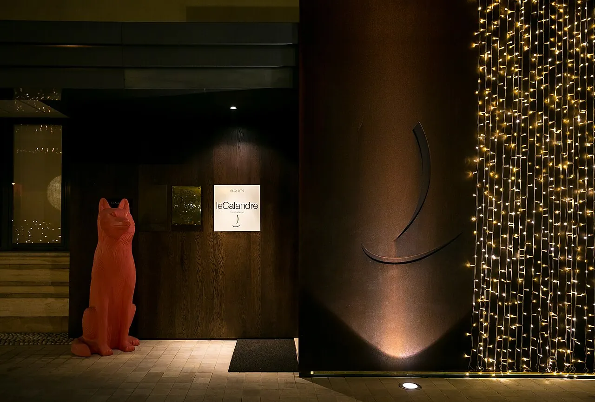
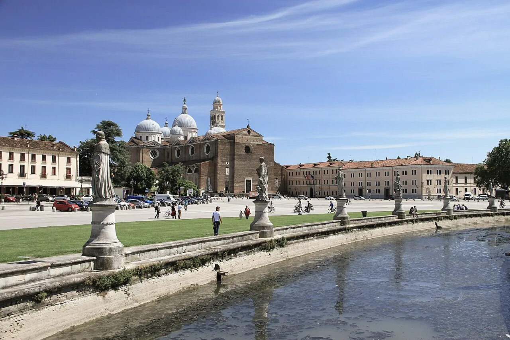
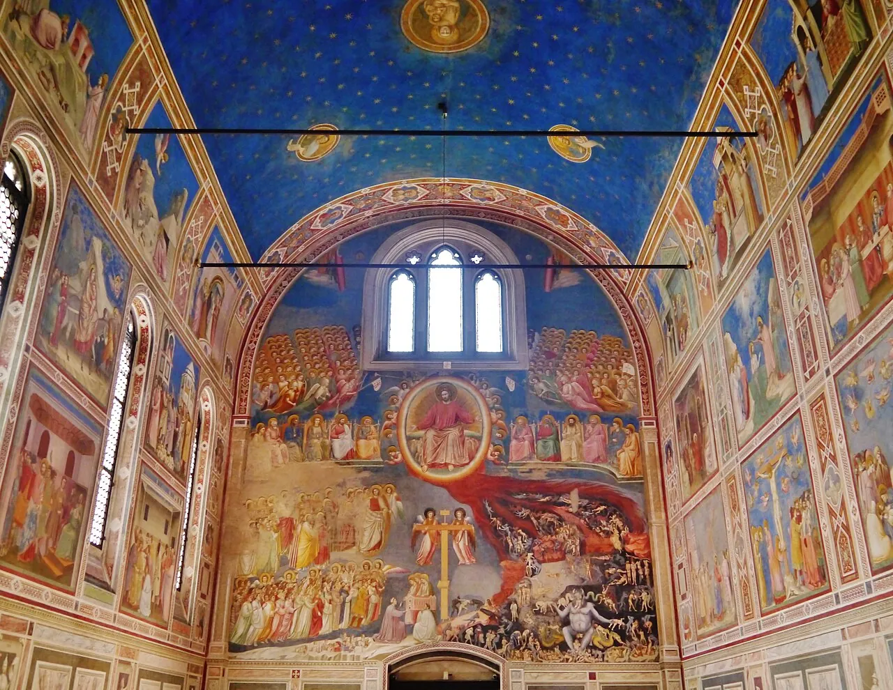
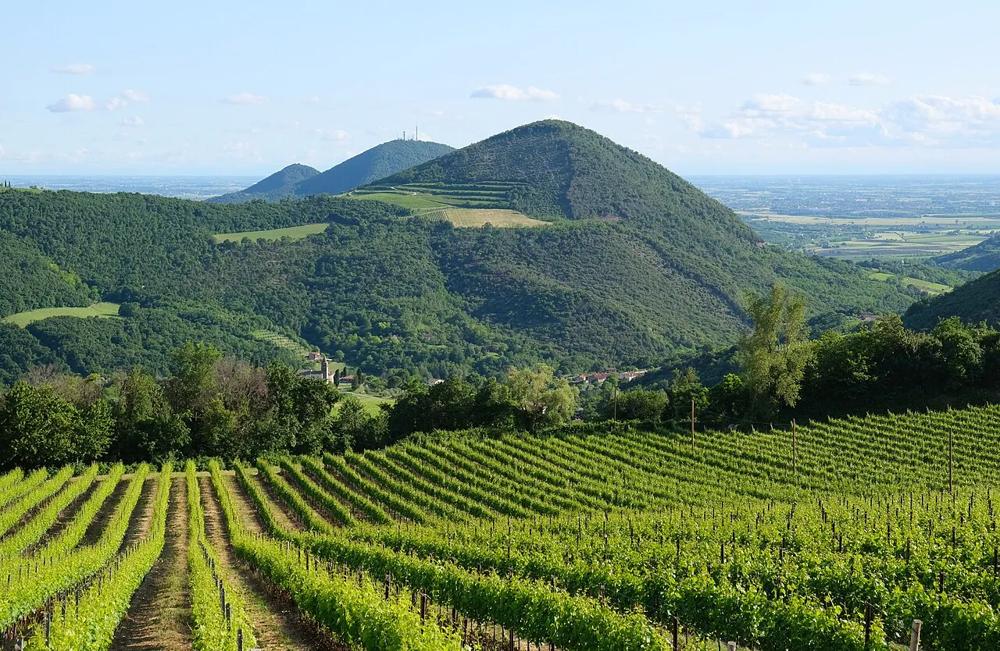
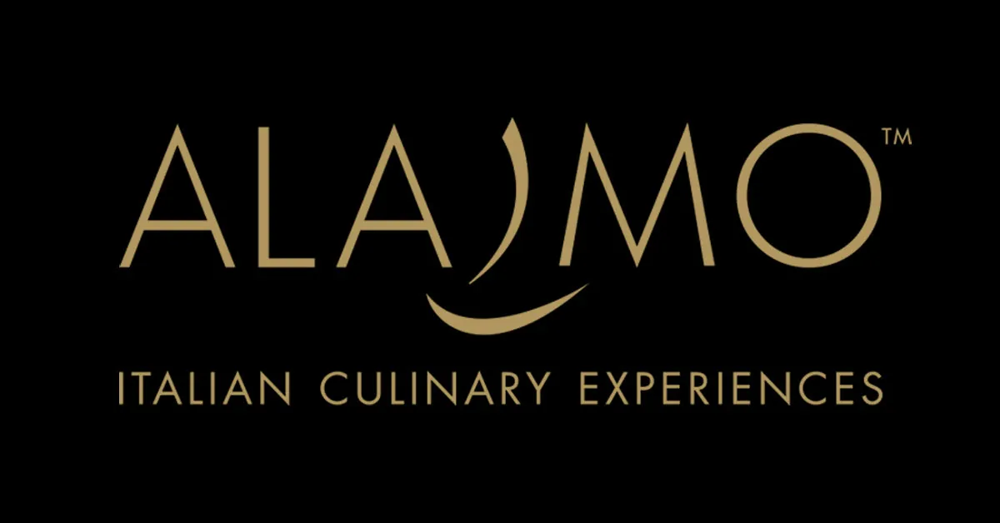
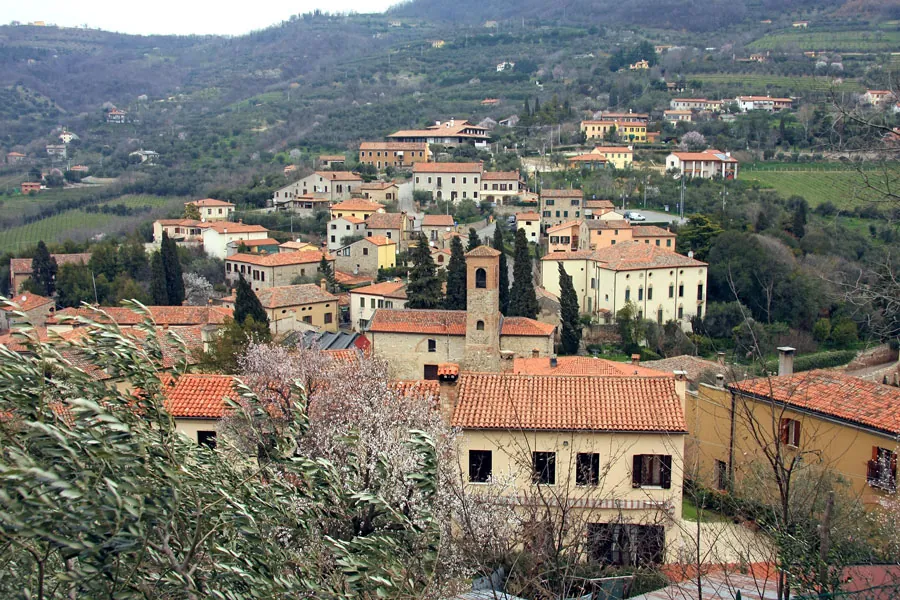
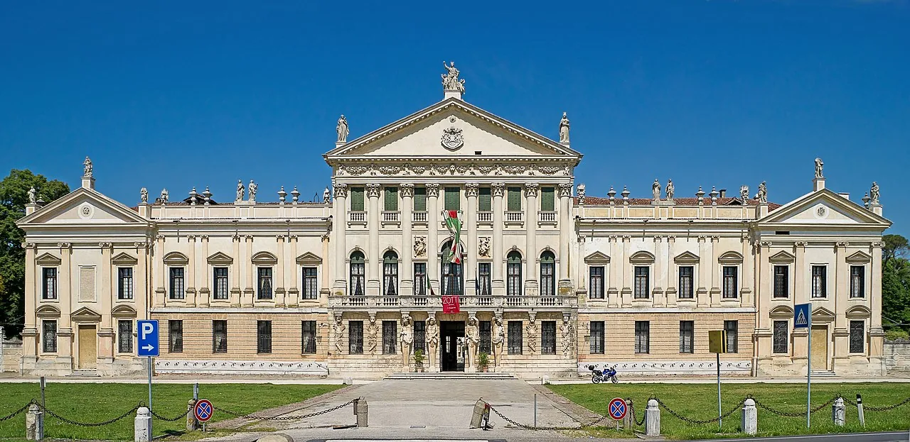
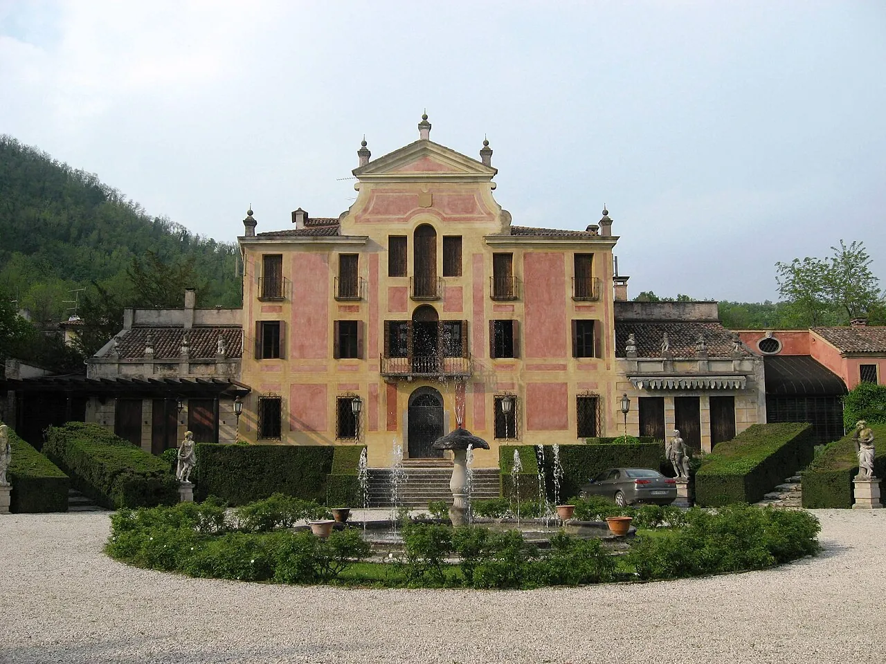

A 48-hour Padua-area booklet built from one fixed point: Le Calandre, Saturday evening, four hours of tasting menu in Sarmeola di Rubano [1]. Everything else — daytrip, lodging, Sunday recovery — is sequenced backwards from that table.
★ ★ ★ Michelin 2026
Le Calandre is the spine of this booklet. The Alajmo tasting menu runs roughly four hours and lets you out between 22:30 and 23:30 [4], which is the operational fact every other choice has to bend around. Either you can walk back to your bed — in which case Hotel Le Calandre next door or Hotel Vittoria two kilometres up Via della Provvidenza solve the problem [41][43] — or you've pre-booked the return taxi to Padua via TaxiPadova's 24/7 dispatch [4].
The daytime then writes itself. Padua's UNESCO fresco circuit and a Saturday cushion of the Prato della Valle market [9], or — if you want green and altitude — Trail 9 up Monte Venda and a stop at Abbazia di Praglia before pivoting east [16]. The Sunday is gentler: a walled-town drive through Monselice, Arquà Petrarca and Este, or thermal mud at Abano [31].
Two unresolved details before you book. The Le Calandre menu price for 2026, the wine-pairing cost, and the reservation lead-time were not nailed down in research — phone the restaurant directly. And the hotel next door, despite the shared name, is not Alajmo-owned and books no perks for diners [2].
Don't fight the SS11 traffic on arrival. The bus 10 also serves Rubano but a taxi at this hour eats less of the evening.
If you've picked Hotel Le Calandre, you're three doors from the restaurant. If Belludi 37, you're between Prato della Valle and the Basilica — perfect for tonight's spritz hour [47].
Stand at a tall table under the arcades with a Select or Aperol Spritz. The piazza is a working café set, not a tourist set-piece.
An osteria plate of bigoli or risi e bisi is more than enough. Do not over-order tonight.

If Friday is your arrival day, ring Le Calandre before you fly — Saturday-evening tables at three Michelin stars don't appear last-minute [1]. The Alajmo office (+39 049 630303 · info@calandre.com) is the only path; menu price, wine pairing, dress code and lead-time were not surfaced in research — confirm directly.
Pre-book the Scrovegni Chapel — no same-day tickets, 15-minute slot, arrive 5 minutes before to acclimatise in the airlock room [6][7]. The €28 Urbs Picta card covers all eight UNESCO fresco sites and unlimited transit [8].

For walking legs and altitude. Trail 9 is the gentle 3.5 km path with 66 m of gain — under 1.5 hours from Casa Marina [17]. Trail 4 is the proper loop, 6 km / 250 m / 2.5 h, past the ruined Olivetan monastery [18].

Three Michelin stars · the Alajmo family · the four-hour table this booklet is folded around.

The research synthesis explicitly flagged this: the children all optimise for arriving at dinner, none for recovering from it. So this Sunday is built loose by design.
A pool-only day spa at Hotel Mioni Pezzato from €75 (Mon-Thu, higher Sat) [33] or an afternoon-only at Hotel Savoia Thermae from €35 [34].
Castello di Monselice by guided tour only (60 min, €10, closed Tuesdays) [22], the Santuario delle Sette Chiese walk free through Porta Romana [24]. Then Petrarch's house and tomb in Arquà (€5) [20].
The Tiepolo Apotheosis of the Pisani Family in the ballroom — the largest fresco he ever painted for a private residence [29]. Note: park & labyrinth closed until June 2026 for PNRR restoration [28]. For a Sunday after that date, Valsanzibio's 1664-69 boxwood maze is the consolation prize [27].



Of every 2026 weekend, only this Saturday lands an in-radius tech anchor: DIGITALmeet, Italy's largest digital-literacy festival, on its closing day in Padova [53]. Every other dated 2026 event in the radius — IMPACT at Fiera di Padova, the AWS and Azure meetups, EG-ICE — is a Wed-Fri affair [54]. If the trip needs a justification beyond the dinner, this is the date that aligns.
The two lodging research angles agree on one thing: the table doesn't come with a room, the Alajmo family won't block one for you, and the hotel next door is independently operated despite the shared name [2]. So pick a philosophy.
Three doors from the restaurant — the entire reason to book it. Décor reviewed as dark, breakfast basic but adequate; the proximity is the proposition [41].
Two kilometres up Via della Provvidenza, walkable post-dinner and a step up in finish. On-site restaurant and wine bar; reviews credit hospitality [43].
Mid-century-design boutique between Prato della Valle and the Basilica, prosecco on arrival, no elevator. Stay here if you want the weekend itself to be the trip, not just the dinner [47].
Relais & Châteaux thermal resort in Montegrotto · mud therapy + multiple thermal pools · 15 km SE [50].
Restored 17th-century Venetian barns in Mestrino · 12 rooms · 4.8/5 Travelers' Choice · ≈5 km from Le Calandre [51].
Boutique 4-star in a 1500s building in Padova's Ghetto, 100 m from Piazza delle Erbe, ZTL zone [48].
End of booklet · Atlas Veneto № 24-10-26
Compiled from four research angles · 125 citations · 32 minutes reading on the canonical
Sequenced backwards from one Saturday-evening table in Sarmeola di Rubano.